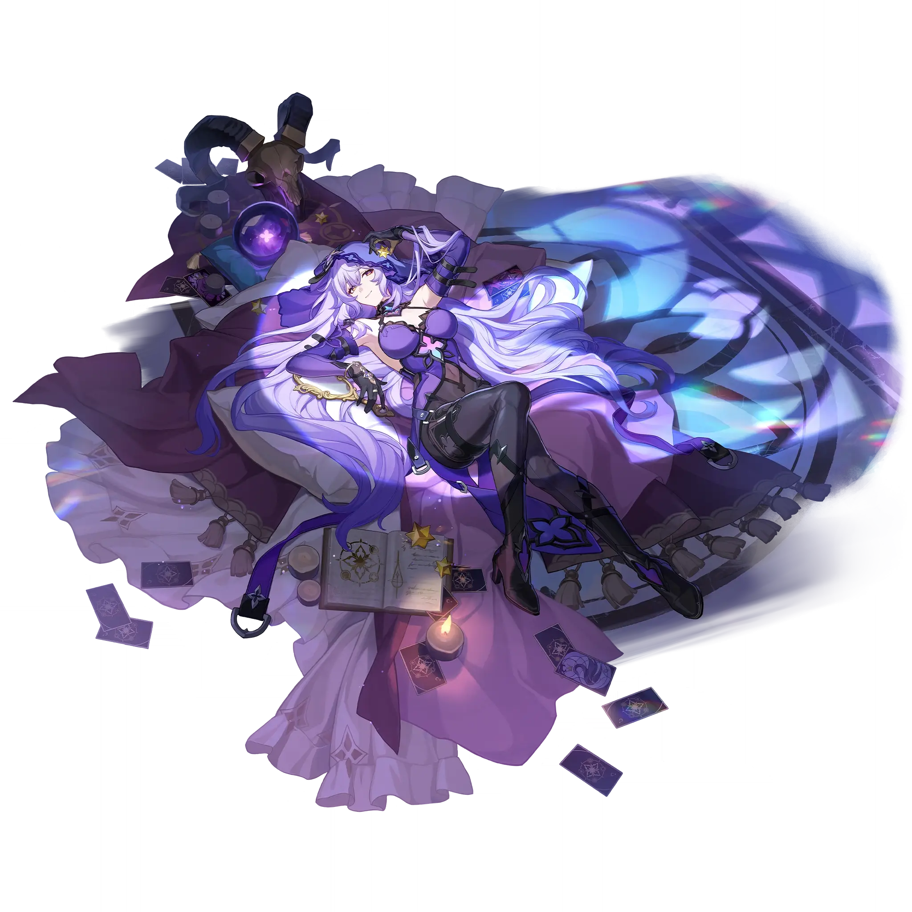

Black Swan
Best Black Swan build guide for Honkai Star Rail. See Black Swan's best Relics, Light Cones, teams, Eidolons, Trace priority, and how to play Black Swan.
🔍 Detail Skill
Semua skill aktif dan pasif beserta efeknya.
Deals Wind DMG equal to #1[i]% of Black Swan's ATK to one enemy.
Deals Wind DMG equal to #1[i]% of Black Swan's ATK to one designated enemy and any adjacent targets. At the same time, there is a 100% base chance of reducing the DEF of the enemy target and the adjacent targets by #4[i]%, lasting for 3 turn(s).
Every time an enemy target receives 1 instance of DoT, there is a #1[i]% base chance for it to be inflicted with 1 stack of "Arcana". While an enemy target is in the "Arcana" state, they are also considered to be simultaneously afflicted with Wind Shear, Bleed, Burn, and Shock. The target receives Wind DoT equal to #2[i]% of Black Swan's ATK at the start of each turn, after which the number of sta
After this Technique is used, there is a #1[i]% base chance for each enemy to be inflicted with 1 stack of Arcana at the start of the next battle. For each successful application of Arcana on a target, inflicts another stack of Arcana on the same target. This process repeats until Arcana fails to be inflicted on this target. For each successive application of Arcana on a target, its base chance of
⚔ Light Cone Terbaik
Diurutkan dari yang paling kuat. Persentase menunjukkan performa relatif terhadap pilihan terbaik.
💎 Relic Set Terbaik
Set terbaik untuk karakter ini, diurutkan berdasarkan prioritas.
📊 Stat Utama
Stat yang dicari pada tiap slot.
👥 Tim yang Direkomendasikan
Karakter yang sering dipasangkan bersama Black Swan.
 Kafka
Kafka
 Hysilens
Hysilens
 Ruan Mei
Ruan Mei
 Huohuo
Huohuo
🔗 Lanjutkan
Build ini dirangkum dari Prydwen Institute. Starwise tidak menghitung sendiri. Angka bisa berubah setelah patch atau karakter baru rilis.